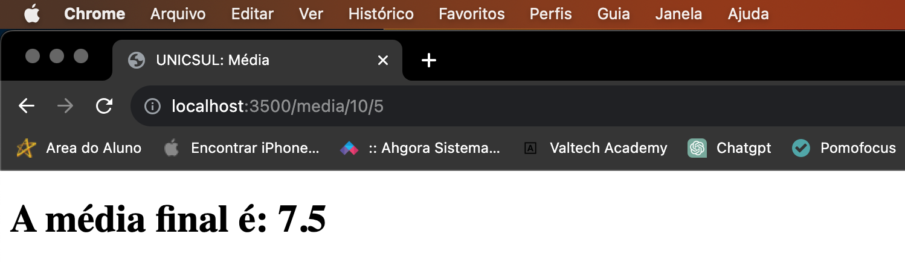

Neste projeto utilizamos de recursos do spring para criação de 3 rotas + página home no endereço " localhost:3500 "
Para utilização da rota de saudação basta acessar do localhost e adicionar a rota "/ola" e passar um parametro pela barra de endereço com o seu nome.
Exemplo: localhost:3500/ola/(seu_nome)
Segue imagem da página com resposta da rota:
Para utilização da rota de calcular média entre 2 números basta acessar localhost e adicionar a rota "/media" e passar na url 2 notas.
Exemplo: localhost:3500/media/(nota1)/(nota2)
Segue imagem da página com resposta da rota:
Para utilização da rota de calcular a raiz de um número, acesse localhost e adicione a rota "/raiz" e ao lado o número desejado.
Exemplo: localhost:3500/raiz/(numero)
Segue imagem da página com resposta da rota: